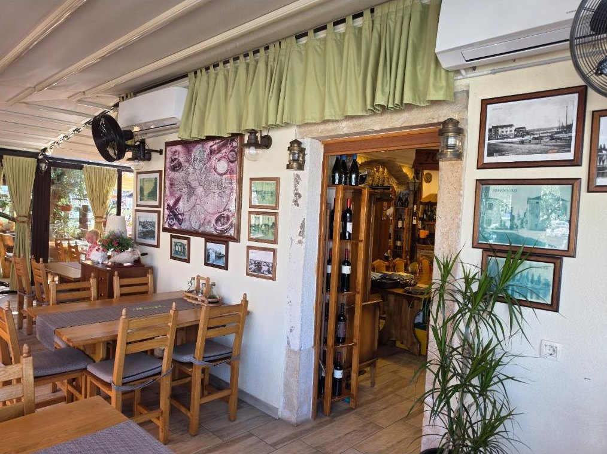

Der Name über der Tür
Maksimilijan Njegovan
1858 bis 1930
Admiral der k.u.k. Kriegsmarine, gebürtiger Kroate, Flottenkommandant im Ersten Weltkrieg.

Eine Konoba, die sich an die Matrosen der alten Flotte erinnert
Anderthalb Jahrhunderte lang schickte die istrische Küste ihre Männer unter der habsburgischen Kriegsflagge zur See. Admiral Max trägt den Namen des ranghöchsten unter ihnen, Maksimilijan Njegovan, und wird im Andenken an jeden k.u.k. Matrosen und die Familien geführt, die in den Hafenstädten auf sie warteten.
Der Raum zeigt es. Messing, dunkles Holz, Seekarten und Schiffsmodelle wurden gemeinsam mit dem Gallerion zusammengetragen, dem Museum der k.u.k. Kriegsmarine ein paar Gassen weiter in der Altstadt. Draußen liegt die Terrasse am Fuß der Mole Porporela, die Boote des Mandrač auf der einen Seite, die offene Adria auf der anderen.
Die Küche ist einfacher als die Geschichte. Fisch und Muscheln kommen von den Booten des Ortes und werden gegrillt, gebraten oder auf Buzara-Art gekocht, wie man es in Novigrad immer getan hat. Das Brot wird im Haus gebacken und kommt mit istrischem Olivenöl. Die Portionen sind großzügig, die Rechnung ist ehrlich.